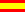

|
|
|
| The Language Glosa | Learning- and Textmaterial | Links | Vocabulary |
Glosa Vocabulary
The Glosa words are taken from Latin and Greek. So they are known to many people by foreign words or by the Roman languages. A limitated vocabulary (Glosa 1000 or Centra Glosa), easy to learn for beginners, should satisfy for all day situations. For higher demands (science, art, poetry) an extension (Glosa 6000 or Mega Glosa) is available.
To offer a central vocabulary is a good idea and a strength of the Glosa design. Unfortunately the many Glosa-1000-lists (you can find some of them below) differ from each other. The Glosa Internet Dictionary (GID) is a project, that tries to bring together all the existing vocabulary material.
English

|
The
Glosa Internet Dictionary
(GID)
Glosa-English. All:
glen.htm (HTML, 356 kB),
glen.txt (plain ASCII, 348 kB).
Only Centra:
coglen.htm (100 kB).
The GID as "book" in pdf-format: gid.pdf (732 kB, perhaps fitting for offline-reading or printing). |
The Central list by the Glosa authors Ashby/Clark gives an English cognate to each Glosa 1000 word. So it affords an insight into the design of the Glosa words and makes vocabulary learning quite easy.
Kevin Smith has some vocabulary stuff on his site www.qualitycode.com/glosa/index.html, mainly based on the files above, partly experimental. This site will probably be removed soon, so if the link is dead, please click here to see a copy.
Español/Castellano (Spanish) 
See below "Word Kitchen" for more information about these files.
And here there is also a little machine-translated list Glosa-Spanish of an older version of the GID. Translation-programs always cause funny nonsense, so this file could only be a base for future work, but please do not use it without the English version and not without thinking.
Please prefer the English lists of GID above, if it is possible for you.
Deutsch (German)

GID (only Centra-words) Glosa-English with German translation (machine-generated) of the English words: gid_de.htm (1.3 MB).
Files based on the list of the book “Deutsch - Glosa 1000” (a little enhanced, but expired): Glosa-Deutsch, Deutsch-Glosa.
Français (French)
Daniel Macouin has assembled a printable version of these files.
See below
"Word Kitchen"
for more information about these files.
Please prefer the English lists of GID above, if it is possible for
you.
Italiano (Italian)
Here there is a little machine-translated list Glosa-Italian of an older version of the GID-Centra. Translation-programs always cause funny nonsense, so this file could only be a base for future work, but please do not use it without the English version and not without thinking.
Ruski (Russian)
Glosa 1000 - Ruski.
Ruski - Glosa 1000.
Another Russian word list is on Kevin Smith's Glosa site.
Please prefer the English lists of GID above, if it is possible for you.
Swahili
There is a printed version of "Glosa 1000" available. When you are interested, please contact Glosa author Wendy Ashby (Glosa Education Organisation, 35 Wingfield Road; Kingston Upon Thames; Surrey KT2 5LR; ENGLAND). Sorry, no online-version available yet.
Zhongguo-lingua (Chinese)
Please visit the site of Prof.
Liu Haitao
(or click here for a
copy)
for a Chinese translation of the Glosa 1000 wordlist.
Please prefer the English lists of GID above, if it is possible for
you.
The Word Kitchen
Only for specialists, nothing for people afraid of problems:
gidhist.htm with further information to the GID and its history, missing words (perhaps this file is not up-to-date), synonyms in Core (perhaps this file is not up-to-date), Similar Synonyms (with solution suggestions of Glosa author Wendy Ashby), a "Word Derivation Scheme".
Some changes have been made to the Central list (see above). For those with historical interest the original central list could be found here.
French:
The
French-Glosa
list (see above "French") is from the book
"Français -Glosa 1000" by
the Glosa authors Wendy Ashby and Ron Clark themselves, but with some
corrections.
Only for historical interest, - please do not use it! -:
here you can have a look at their old, original and uncorrected
French list.
The reversed list
Glosa-French
(see above "French") is computer-generated from the corrected
French-Glosa list. The book has no Glosa-French list in it.
Spanish:
The
Spanish-Glosa
list (see above "Spanish") is from the book
"Español -Glosa 1000" by Richard Burrows and the
Glosa authors Wendy Ashby and Ron Clark themselves, but with some
corrections.
Only for historical interest, - please do not use it! -:
here you can have a look at their old, original and uncorrected
Spanish list.
The reversed list
Glosa-Spanish
(see above "Spanish") is computer-generated from the corrected
Spanish-Glosa list. The book has no Glosa-Spanish list in it.
Marcel Springer, www.glosa.org, last modified 2012-08-12.